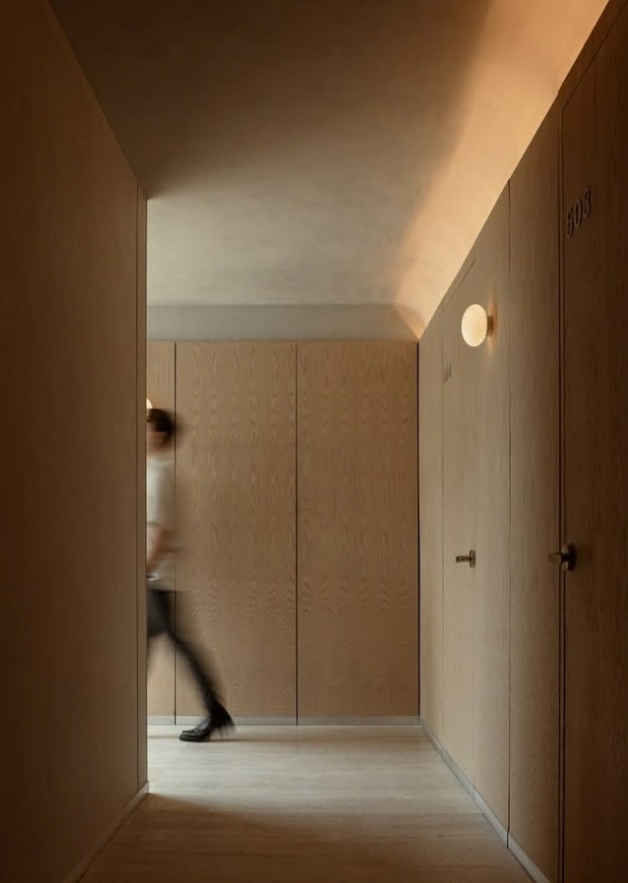
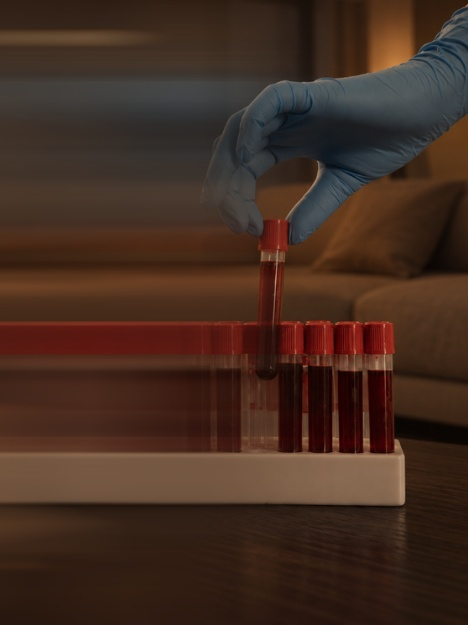
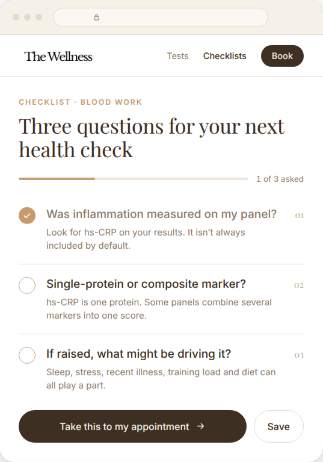
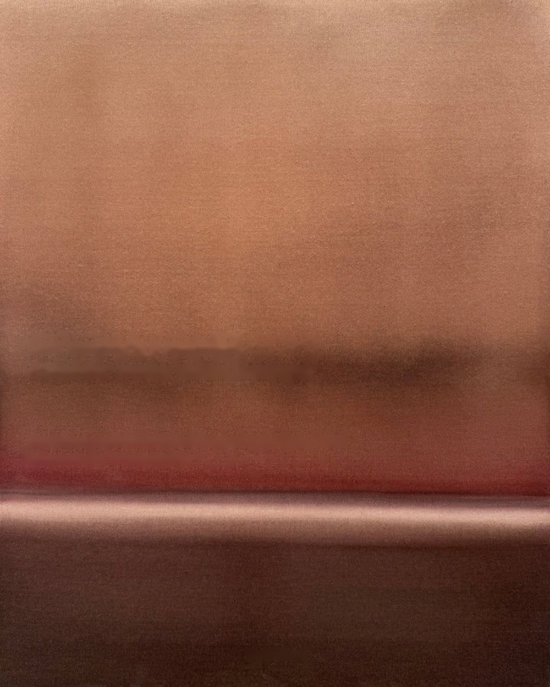

In 27,491 healthy women, GlycA, a steadier inflammation marker, was linked to who had a first cardiovascular event 17 years later.

The standard inflammation test is hs-CRP. It spikes with illness, stress, or just a bad week.
So one high reading may not show your baseline.
Jim Otvos, who developed the method, says it gives a fuller picture of inflammation than any single marker.

Week to week, GlycA moved 4.3% and hs‑CRP moved 29.2% in the same healthy people. That steadiness is what tracking chronic inflammation needs.
You can ask whether your blood work measures it.


Next time you have bloods taken, ask what your panel measures for inflammation.